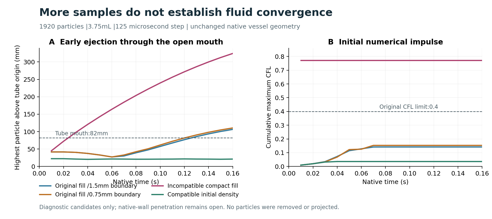
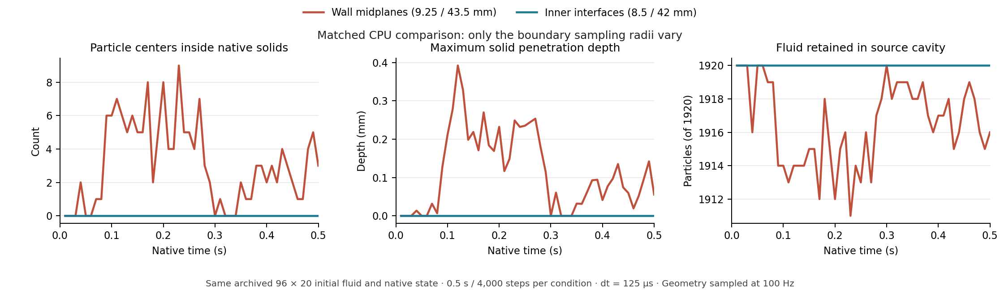

液面不再直接由小球组成
对记录粒子建立隐式表面，再提取三角网格。孤立粒子仍作为液滴保留；没有补画水柱、裁掉漏液或填满烧杯。
FLUID VISUALIZATION · SAME RECORDED TRAJECTORY
从直接画小球，推进到有体积约束的液面与玻璃折射。左右使用同一条 UR5e 原生仿真轨迹；重建保留所有粒子，包括飞溅。
当前边界：这是独立复现的渲染改进。240 粒子的物理分辨率、液流连续性及原作视觉一致性仍待验收，不能据此宣布两篇工作完整复现。
PARTICLES ↔ LIQUID SURFACE
左：记录粒子的调试视图。右：相同粒子生成的液面，使用透射材质。机器人位姿、相机、灯光和玻璃相同。视频覆盖全部 575 个保存帧；每帧标注原生时间，没有重新运行或插值物理轨迹。
WHAT CHANGED
对记录粒子建立隐式表面，再提取三角网格。孤立粒子仍作为液滴保留；没有补画水柱、裁掉漏液或填满烧杯。
首版平滑曾将显示体积放大至 1.82 倍，已保留为失败。修订版为每个连通粒子组求体积约束，并核对原始粒子中心仍在网格内部。
修复场景加载覆盖渲染设置的问题；逐帧确认路径追踪生效。玻璃采用有厚度的折射材质，保留原生三角形和网格法线。
INSPECT THE FRAMES
PHYSICAL RESOLUTION REMAINS OPEN
3.75 mL 若铺满内径 87 mm 的杯底，平均液层约为 0.63 mm；当前粒子初始间距为 2.5 mm。守住体积后，画面仍可能出现薄层破碎和液流断续，这也是接下来需要解决的问题。
首轮 1,920 粒子实验已失败：记录到 12.5 秒后触及两小时计算上限；此前已出现 CFL 0.405 超限及 24 个粒子越界。保留了 312 帧粒子快照，不能把这次结果算成完整 23 秒实验，也不能据此宣称数值收敛。
查看原生实验的实际状态 →NUMERICAL DIAGNOSTICS · 14 OCT 2026
早期粒子先从管口喷出，随后落到台外。将边界采样从 1.5 mm 加密到 0.75 mm 没有消除这一现象。另一个更宽、更低的初始液柱反而出现更强喷射，已作为失败候选保留。

独立 CPU 反例定位了第三组的错误：初始密度比最高 1.4504，即使零重力、边界固定，单步压力修正也产生 7.715 m/s 的速度。缩短步长不能修复这个初态；该结果不代表原始初态具有同样错误。
依据独立密度检查，将紧凑初态首层上移 0.875 mm 后，0.5 秒静置诊断无管口喷出，最大 CFL 为 0.0357。但进一步检查真实管壁发现最多 0.238 mm 的粒子中心穿入；该组未通过几何验收。下面的独立配对实验进一步检验了边界修正，不能把短程稳定解释为完整物理验收通过。
去除重复边界中心后，54 组边界点与 48 步 CPU 耦合状态逐位一致。短程 GPU 测试的中位耗时由 2.47 秒降到 0.79 秒；这不是完整任务的加速结论。
错误初态也能通过平均压力残差检查。后续必须同时核对初始密度、自由表面行为、CFL、粒子去向及完整任务结果。
MATTERIX 的完整三件器皿布置采用 64 条移液事件的严格独立验收，正例通过后才运行负对照。两条线都以实际终态和对照实验判定，不以视频或运行中状态宣布成功。
MATCHED CONTROL · SAME CPU AND INITIAL STATE
固定同一份 1,920 粒子的初态、CPU 后端、125 微秒步长和 0.5 秒时长，只把两只容器的边界采样从壁厚中面移到内壁界面。每组均运行 4,000 个原生步，并独立重算全部 50 个保存帧。

检查对象为粒子中心，采样频率为 100 Hz；没有据此保证全部 8,000 Hz 子步或有限半径液滴都不穿透。修正方案已进入单独的 23 秒完整流程验收，实际状态与终态结果见进展页。
REFERENCE BOUNDARIES
| 工作 | 已核对的实现 | 本页的边界 |
|---|---|---|
| MATTERIX | PhysX 粒子流体；作者代码默认开启液面重建、平滑和各向异性；Isaac Sim／Omniverse RTX 渲染。 | 本页展示 Auto 场景的独立渲染实现，不是 MATTERIX 原生液面算法复现。 |
| Auto-Engineering | 官方明确为 Warp DFSPH 与 MuJoCo 刚体耦合。 | 原作具体倒液渲染配置未公开；本地液面算法和 RTX 材质均明确标为独立实现。 |